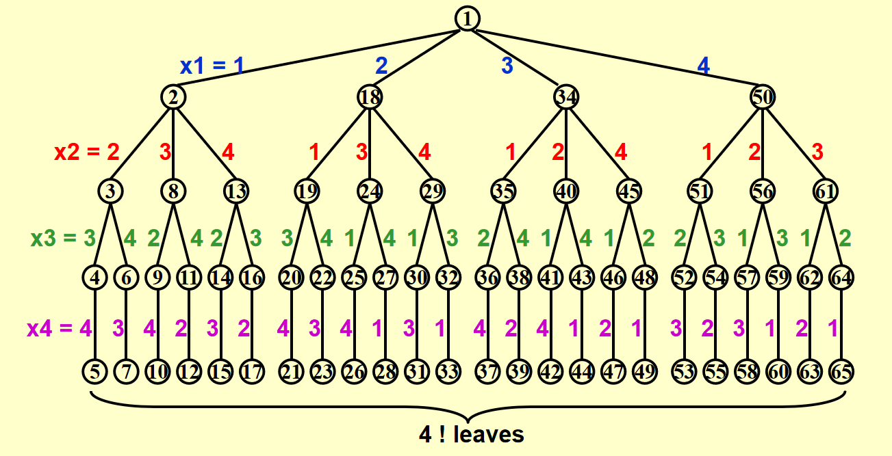
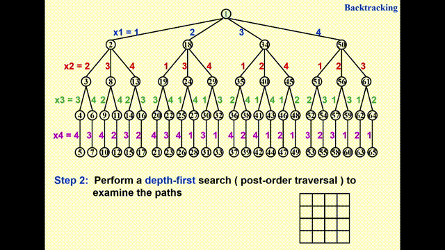
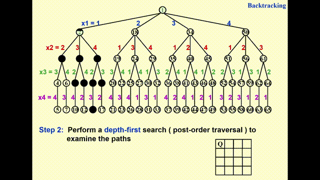
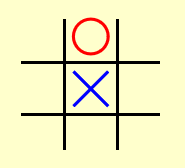
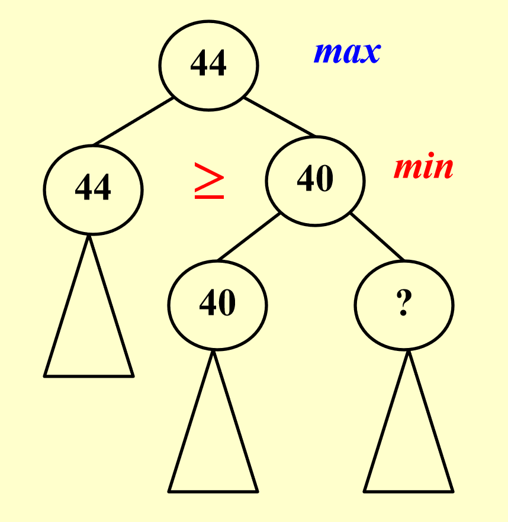

Lec 6: Backtracking⚓︎
约 1872 个字 65 行代码 预计阅读时间 10 分钟
Introduction⚓︎
要想得到某个问题的解，一种方法是列出所有可能的情况，然后对它们逐一检查并识别出可能的解，这种方法称为暴力 (brute force) 枚举，但它仅在情况数不多的时候是可行的，且它的效率实在太低了。
一种优化的方法是本章将要介绍的回溯法(backtracking)，它在检查情况的时候会消除一些不合适的情况（称为剪枝(pruning)
回溯法的大致思路是：
- 假设我们有部分解 \((x_1, \dots, x_i)\)，其中 \(x_k \in S_k, 1 \le k \le i < n\)（个人理解：\(S_k\) 表示第 \(k\) 步下的选择集 (S means Stage or (partial) Solution)，而 \(x_k\) 便是其中的一个选项）
- 首先将一种可能情况为 \(x_{i+1} \in S_{i+1}\) 加到这个部分解中，并检查新的部分解 \((x_1, \dots, x_i, x_{i+1})\) 是否满足限制条件
- 如果满足条件，继续添加下一种情况到部分解中（重复上一步）
- 但如果 \(S_{i+1}\) 中没有满足要求的选择，那么表示沿 \(x_i\) 往下走是走不通的，那么就删掉 \(x_i\)，并且回溯到上一个部分解 \((x_1, \dots, x_{i-1})\)
Template⚓︎
注
如果是初次阅读本笔记，建议先看下面的八皇后问题和 Turnpike 重构问题后再来看该模板，这样印象会更深一点。
代码实现
bool Backtracking (int i) {
Found = false;
if (i > N)
return true; // solved with (x1, ..., xN)
for (each xi in Si) {
// check if satisfies the restriction R
OK = Check((x1, ..., xi), R); // pruning
if (OK) {
Count xi in;
Found = Backtracking(i + 1);
if (!Found)
Undo(i); // recover to (x1, ..., x{i-1})
}
if (Found) break;
}
return Found;
}
注
- 回溯的效率跟可能情况 \(S\) 的规模、约束函数的复杂性、满足约束条件的结点数相关
- 约束函数决定了剪枝的效率，但是如果函数本身太复杂也未必合算
- 满足约束条件的结点数最难估计，使得复杂度分析很难完成
Eight Queens⚓︎
Description⚓︎
问题描述
将 8 个皇后放在 \(8 \times 8\) 的棋盘上，保证任何两个皇后之间不会相互攻击。其中皇后的攻击条件为：两个皇后位于同一行、同一列或同一对角线上。
可行解
下面我们用数学化的语言重新描述这一问题，便于我们设计合适的算法：
- 令 \(Q_i\) 为棋盘上第 \(i\) 行的皇后，\(x_i\) 为 \(Q_i\) 的列索引，\(S_i\) 为 \(x_i\) 可取值的集合
- 限制条件为：
- \(S_i = \{1, 2, 3, 4, 5, 6, 7, 8\}\)，其中 \(1 \le i \le 8\)
- 这表明八皇后问题一共有 \(8^8\) 种可能解
- 当 \(i \ne j\) 时，\(x_i \ne x_j\)
- 这表明每个解是 \(1, 2, \dots, 8\) 的排列，所以可能解的个数降到了 \(8!\) 个
- 延伸：对于 n 皇后问题，一共有 \(n!\) 种可能解
- \(\dfrac{x_i - x_j}{i - j} \ne \pm 1\)
- 用于确保“不在同一对角线”的限制条件
- \(S_i = \{1, 2, 3, 4, 5, 6, 7, 8\}\)，其中 \(1 \le i \le 8\)
Method⚓︎
由于篇幅限制，列出八皇后问题的所有可行解不太现实，因此下面将以四皇后问题为例介绍解法（八皇后问题的解法与之基本一致，只是规模更大了些
-
构建一棵博弈树(game tree)
- 每一条从根节点到叶子节点的路径即为一种可能的解
- 节点内的数字表示搜索的顺序，深度为 \(i\) 的节点表示第 \(i\) 行上的皇后
- 不难发现，这棵博弈树已经排除了两个皇后同行同列的情况，因此之后只需检验是否在同一对角线即可
- 博弈树只是用来让我们直观感受和理解回溯法的解题过程，所以实际编写程序时无需创建这样的树
-
通过执行深度优先搜索(depth-first search)（后序遍历）来检验每一条可能的路径
动画演示
- 由于 GIF 图片最多只能播放 30s 的动画，因此我将这一过程截成了两半，请见谅 ~
- 其中浅绿高亮表示待检验的节点，黑色高亮表示不可行的节点

Turnpike Reconstruction⚓︎
Description⚓︎
问题描述
背景知识：给定 \(N\) 个在 x 轴上的点，它们的坐标满足 \(x_1 < x_2 < \dots x_N\)，并假设 \(x_1 = 0\)。在所有点中任取两点，一共有 \(\dfrac{N(N-1)}{2}\) 种取法，对应有 \(\dfrac{N(N-1)}{2}\) 不同的路径。
问题：给定 \(\dfrac{N(N-1)}{2}\) 条路径，如何重新构造 (reconstruct) 一个点集？
Method⚓︎
例子
根据距离集 \(D = \{1, 2, 2, 2, 3, 3, 3, 4, 5, 5, 5, 6, 7, 8, 10\}\) 构造点集。
- 解方程 \(\dfrac{N(N-1)}{2} = 15\)，解得 \(N = 6\)，即一共有 6 个点
- 由于已知 \(x_1 = 0\) 且最长的距离为 10，可以推断最远的点的坐标 \(x_6 = 10\)，将 10 从 \(D\) 中删除，表示我们暂时不会用到这个距离
- 继续检查下一个最大的距离，找出当前所有可行点的位置，使用回溯法往下搜索，直到找出正确的解。这里的步骤说不太清楚，还是直接看下面的动画演示吧：
动画演示
- 第 1 个点和最后那个点已用红色高亮标出，表示（暂时）确定它们的位置，
- 距离集 \(D\) 中的数字 10 被红色箭头指着，表示将它（暂时）从集合中“删除”，之后不会再用到这个距离了
- 一共有两种情况：\(x_5 = 8\)（\(x_5 - x_1 = 8\)）或 \(x_2 = 2\)（\(x_6 - x_2 = 8\)
） ，根据深度优先搜索，我们先探索左边的分支 - 将距离集中的 1 个 \(2\) 和 \(8\) 删掉，因为新点的加入导致更多距离的出现
- 一共有两种情况：\(x_4 = 7\)（\(x_4 - x_1 = 7\)）或 \(x_2 = 3\)（左边的分支中还没用到 \(x_2\)，\(x_6 - x_2 = 7\)
） ，根据深度优先搜索，我们先探索左边的分支 - 将距离集中的 \(1\)、1 个 \(3\) 和 \(7\) 删掉
- 一共有两种情况：\(x_3 = 6\)（\(x_3 - x_1 = 6\)）或 \(x_2 = 4\)（\(x_6 - x_2 = 6\)）
- 经检验，这两种情况均不满足要求
- \(x_3 = 6\) 时，有 \(x_4 - x_3 = x_5 - x_4 = 1\)，但距离集中只有 1 个 \(1\)，不满足条件
- \(x_2 = 4\) 时，有 \(x_2 - x_1 = x_5 - x_2 = 4\)，但距离集中只有 1 个 \(4\)，不满足条件
- 所以通过回溯，回到 \(x_2 = 3\) 的分支上，记得恢复点集和距离集中被用掉或被删掉的点或路径
最后，我们终于找到一种正确的点集！
问题：为什么第 3 步不是找“下一个最小的距离”
相较于找最小的距离，找最大的距离所产生的可能性更少（或者解空间更小
代码实现
bool Reconstruct(DistType X[], DistSet D, int N, int left, int right) {
// X[1]...X[left-1] and X[right+1]...X[N] are solved
bool Found = false;
if (is_Empty(D))
return true; // solved
D_max = Find_Max(D);
// option 1: X[right] = D_max
// check if |D_max - X[i]| in D is true for all X[i]'s that have been solved
OK = Check(D_max, N, left, right); // pruning
if (OK) { // add X[right] and update D
X[right] = D_max;
for (i = 1; i < left; i++)
Delete(abs(X[right] - X[i]), D);
for (i = right + 1; i <= N; i++)
Delete(abs(X[right] - X[i]), D);
Found = Reconstruct(X, D, N, left, right - 1);
if (!Found) { // if does not work, undo
for (i = 1; i < left; i++)
Insert(abs(X[right] - X[i]), D);
for (i = right + 1; i <= N; i++)
Insert(abs(X[right] - X[i]), D);
}
}
// finish checking option 1
if (!Found) { // if option 1 does not work
// option 2: X[left] = X[N] - D_max
OK = Check(X[N] - D_max, N, left, right);
if (OK) {
X[left] = X[N] - D_max;
for (i = 1; i < left; i++)
Delete(abs(X[left] - X[i]), D);
for (i = right + 1; i <= N; i++)
Delete(abs(X[left] - X[i]), D);
Found = Reconstruct(X, D, N, left + 1, right);
if (!Found) {
for (i = 1; i < left; i++)
Insert(abs(X[left] - X[i]), D);
for (i = right + 1; i <= N; i++)
Insert(abs(X[left] - X[i]), D);
}
}
// finish checking option 2
} // finish checking all the option
return Found;
}
Games⚓︎
Tic-tac-toe⚓︎
Description⚓︎
问题描述
井字棋(tic-tac-toe)：在 \(3 \times 3\) 的棋盘上，一位玩家画圈，另一位玩家画叉，轮流下棋。如果某位玩家在棋盘上的所有标记中有 3 个位于同一行、同一列或同一对角线上，则该玩家获胜。
- 一共有 \(3^9\) 种可能的棋局（每个格子上有圈、叉、空三种情况，不考虑获胜后停止下棋的问题）
- 一共有 \(9!\) 种可能的下棋顺序（不考虑当前的棋子是圈还是叉）
Method⚓︎
我们采用最小最大策略(minimax strategy) 来解决井字棋的问题。
- 假设玩家双方分别是人类和计算机，并且假定人类倾向于最小化位置 \(P\) 的值，而计算机倾向于最大化 \(P\) 的值
-
我们使用一个评估函数(evaluation function) 来量化一个位置的价值(goodness)
- 比如：\(f(P) = W_{\text{Computer}} - W_{\text{Human}}\)，\(W\) 表示在当前位置 \(P\) 的情况下可能的获胜情况数
例子
- 蓝色的叉是计算机画的，红色的圈是人类画的
- 不难得出：\(W_{\text{Computer}} = 6, W_{\text{Human}} = 4\)，所以 \(f(P) = 6 - 4 = 2\)
动画演示
- 为了解释的方便，我们不考虑更后面的轮数（实在画不下这么大的博弈树
！ ） ，所以从第 2 轮开始分析 - 计算机对应“叉”，人类对应“圈”
先计算在第二轮结束后所有情况下的评估函数值（红色数字）

- 可以看出，第二轮是人类下棋，因此第一轮的评估函数值为第二轮评估函数中的最小值
- 这样的话人类在第二轮中应该选择第二种情况，因为它的评估函数值最小，说明它获胜的希望更大
- 第一轮是计算机下棋，因此第 0 轮的评估函数值为第一轮评估函数中的最大值
\(\alpha-\beta\) 剪枝：它结合了 \(\alpha\) 剪枝和 \(\beta\) 剪枝，能够将博弈树的搜索规模限制在 \(O(\sqrt{N})\) 个节点（\(N\) 为博弈树的节点数
-
\(\alpha\) 剪枝：对于下列情况，我们不需要再搜索根节点为
?的子树- 若
? >= 40，第二层的节点40不会更新，因为该节点取的是左右孩子的最小值 - 若
? < 40，虽然第二层节点的40会更新，但是不影响第一层的节点，因为第一层节点取的是左右孩子的最大值，而最大值原来就不是这个更新的节点
- 若
-
\(\beta\) 剪枝：对于下列情况，我们不需要再搜索根节点为
?的子树
- 若
? <= 68，第二层的节点68不会更新，因为该节点取的是左右孩子的最大值 - 若
? > 68，虽然第二层节点的68会更新，但是不影响第一层的节点，因为第一层节点取的是左右孩子的最小值，而最小值原来就不是这个更新的节点
- 若
评论区